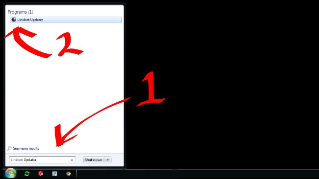
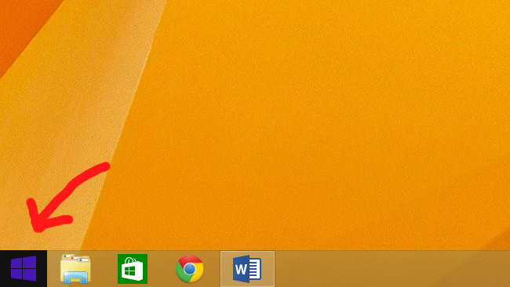
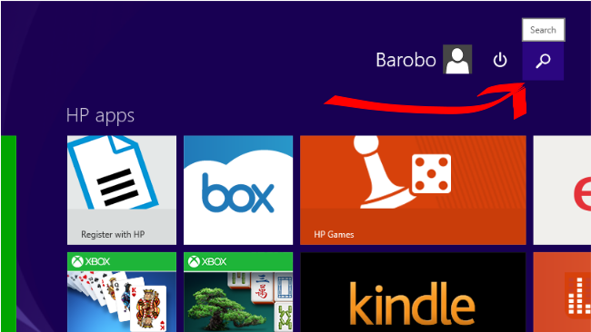
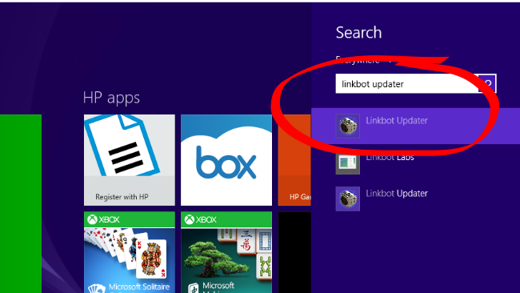

Updating Linkbots
Linkbots may need to be configured to work with this version of Linkbot Labs. If you aren't sure, just try using them in an app. If you need to update them, you'll be taken back to this page.
Start
This process should take less than two minutes per robot.
-
Start Linkbot Updater, which is included with Linkbot Labs. There
are two sets of instructions that will help you do this:
- Open the Start Menu and search for "Linkbot Updater". Run the program to continue.
- 
- If the desktop is visible, click the Start icon
- 
- From the Start page, click the Search icon
- 
- In the search bar, type "Linkbot Updater". When it appears in the list, click on it to continue.
- 
- Once Linkbot Updater is running, it will talk you through the rest of the process. (It's quick.)